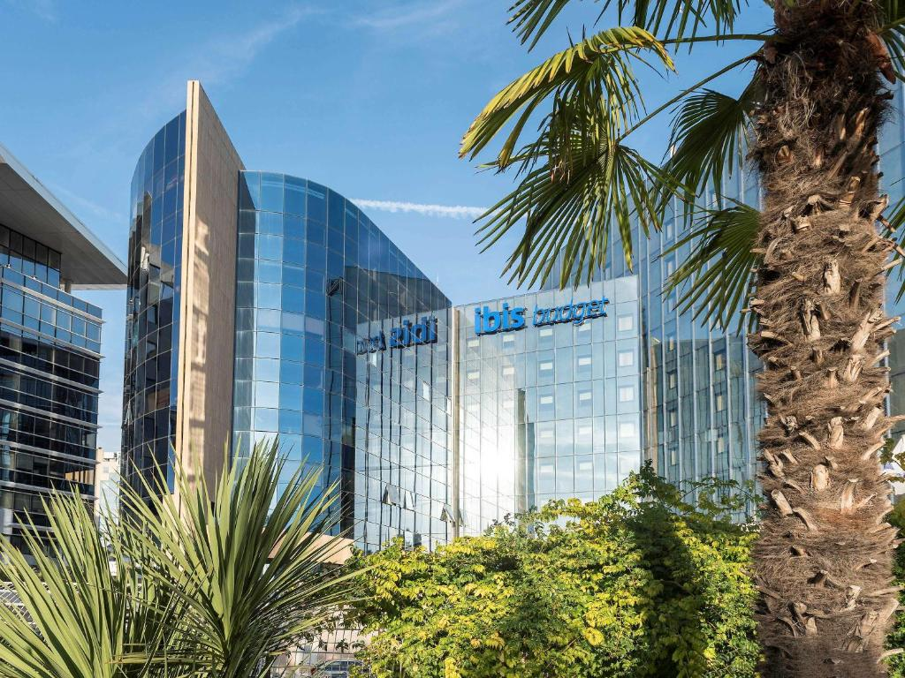

Guide de voyage
with
Logan Travel

Parmi l’une des premières destinations de voyage dans le monde, Paris est une ville incontournable qu’il ne faut pas manquer de visiter au moins une fois dans sa vie. Musée du Louvre, Cathédrale Notre-Dame, Tour Eiffel… la capitale française regorge d’innombrables monuments magnifiques à découvrir. Gastronomie française, arts et boutiques de luxe ne manqueront quant à eux, pas à l’appel avec ses nombreux quartiers commerciaux qui en font rêver plus d’un ....
Lire PlusC’est un véritable décor des mille et une nuits qui vous attend en Gironde avec la dune de Pilat et son étonnante étendue de sable doré. Celle-ci laisse profiter d’une vue tout simplement incroyable sur l’océan d’un côté et les forêts des Landes de l’autre. Aujourd’hui, la dune du Pilat est considérée comme la dune la plus haute d’Europe, réalisant une hauteur de près de 107m ....
Lire PlusNew York est la ville emblématique des Etats-Unis. Les taxis jaunes, la vapeur qui sort des grilles, des gratte-ciel imposants et les néons de Times Square vous transporteront dans une ambiance de cinéma. On y trouve parmi les symboles les plus connus du pays comme la statue de la liberté, le Brooklyn bridge, l'Empire state building, Central Park... Visiter New York c'est se prendre une vraie claque culturelle ....
Lire Plus
Visitez absolument le Mont-Saint-Michel et son abbaye. Vous serez subjugué par cet extraordinaire édifice religieux surnommé la « Merveille de l’Occident ». C’est un ensemble de forteresses médiévales qui occupe un îlot rocheux, et dominé par abbaye bénédictine de style gothique. Le spectacle ne s’arrête pas là. Le Mont-Saint-Michel est le théâtre de la marée à la plus haute amplitude de l’Europe. Une fois que cela se produit, le mont est coupé de tout accès et redevient une île ....
Lire Plus
Une région de France très réputée et non loin de l'Italie, la Corse est une île méditerranéenne qui permet de s'évader aux abords de paysages divers et variés. Forêts denses, plages paradisiaques, montagnes et falaises rocheuses... Il faut savoir que la Corse est aujourd'hui considérée comme un parc naturel régional. Ce sera alors l'occasion pour les amoureux de la nature, de se rendre dans les innombrables sentiers de randonnées, en direction des montagnes surplombant la mer méditerranée ....
Lire Plus

Address: 43 Rue de France, 77300 Fontainebleau, France
12:15PM - 1:30PM, 7:15PM - 9PM
Web SiteAddress: 31 Rue de Champigny, 94430 Chennevières-sur-Marne, France
12PM - 1:30PM, 7:30PM - 9:30PM
Web SiteAddress: 1 Bd Jean Jaurès, 91100 Corbeil-Essonnes, France
12PM - 2:30PM, 7:30PM - 10PM
Web SiteAddress: 44 Rue de la Folie Méricourt, 75011 Paris, France
7PM - 10:30PM
Web SiteAddress: 24 Rue Louise-Émilie de la Tour d'Auvergne, 75009 Paris, France
7:30PM - 11PM
Web SiteEn France, le transport ferroviaire est marqué par une nette prédominance du trafic voyageurs, tiré en particulier par la grande vitesse ferroviaire4, par rapport au trafic fret. La Société nationale des chemins de fer français (SNCF), qui bénéficie d'une situation de quasi-monopole dans l'exploitation de services sur le réseau ferré national géré par SNCF Réseau, est ainsi la deuxième entreprise ferroviaire européenne pour le transport de voyageurs et la cinquième mondiale avec 100,2 milliards de voyageurs-kilomètres en 2017 ....
Au niveau national, le mode de transport collectif le plus utilisé est le bus (à 71 %), suivi par le métro (49 %), le tramway (44 %), le RER (23 %) et le TER (18 %). Les Français plébiscitent les transports en commun pour leur côté pratique (46 %), mais ils sont aussi de plus en plus nombreux (17 % en 2019, contre 14 % en 2018) à relever leur intérêt environnemental ....
Le transport aérien désigne l'activité de transport de passagers ou de fret effectuée par la voie des airs, ainsi que le secteur économique regroupant les activités principales ou annexes concernant ce mode de transport. En 2012, environ 80 000 vols commerciaux avaient lieu chaque jour (dont 28 000 en Europe), soit 29,2 millions de vols par an1. En France, 170 millions de passagers sont transportés (+18 % depuis 2012) et 2,6 millions de tonnes de fret sont transportés en 20172. Au niveau mondial, l’Association internationale du transport aérien prévoit un doublement du trafic de passagers sur la période 2019-2037
Le trafic maritime de marchandises des ports de commerce en France représente 365 millions de tonnes. Les six ports autonomes maritimes français (Dunkerque, Le Havre, Rouen, Nantes/Saint-Nazaire, Bordeaux et Marseille) traitent plus de 80 % du trafic maritime de marchandises. Le Havre permet l'entrée des plus grands porte-conteneurs et des plus grands pétroliers. C'est le premier port Français pour les conteneurs par an avec plus de deux millions d'EVP (équivalent vingt pieds) tandis que Marseille-Fos est le premier port français pour le trafic total. ....